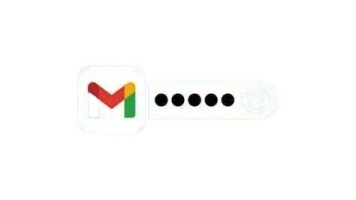
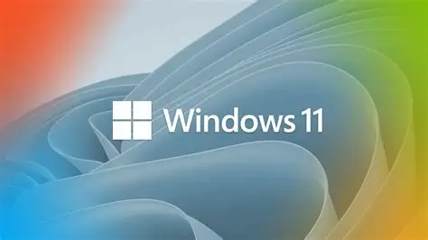

How to Fix Wi-Fi Not Connecting on Windows or Phones
Here’s a guide to get you back online, whether you’re on Windows or a phone.
Read more →Clear, hands-on tech fixes & tips for everyday users
Start ReadingHere’s a guide to get you back online, whether you’re on Windows or a phone.
Read more →
A phone that dies before the day is through, is one of the biggest annoyances too.
Read more →
Forgot your Gmail password? Don’t panic — Google’s account recovery system makes it possible to get back in...
Read more →
Windows 11 is sleek, but over time it can feel sluggish — startup takes longer, apps hesitate, and your laptop fan spins like a jet engine.
Read more →
Over time, your browser stores temporary files (cache) and small bits of data (cookies) to make websites load faster and remember your logins.
Read more →
Windows Updates are meant to improve your PC, but sometimes they pop up at the worst moments, eat bandwidth, or break something that was working. Below are three proven ways to stop them — from the quick temporary pause to a deeper, more permanent block.
Read more →